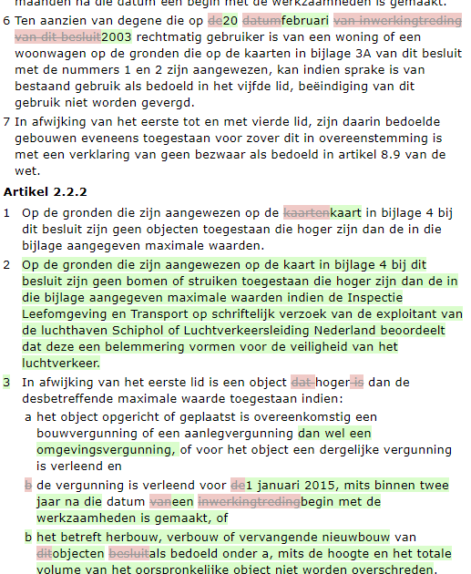
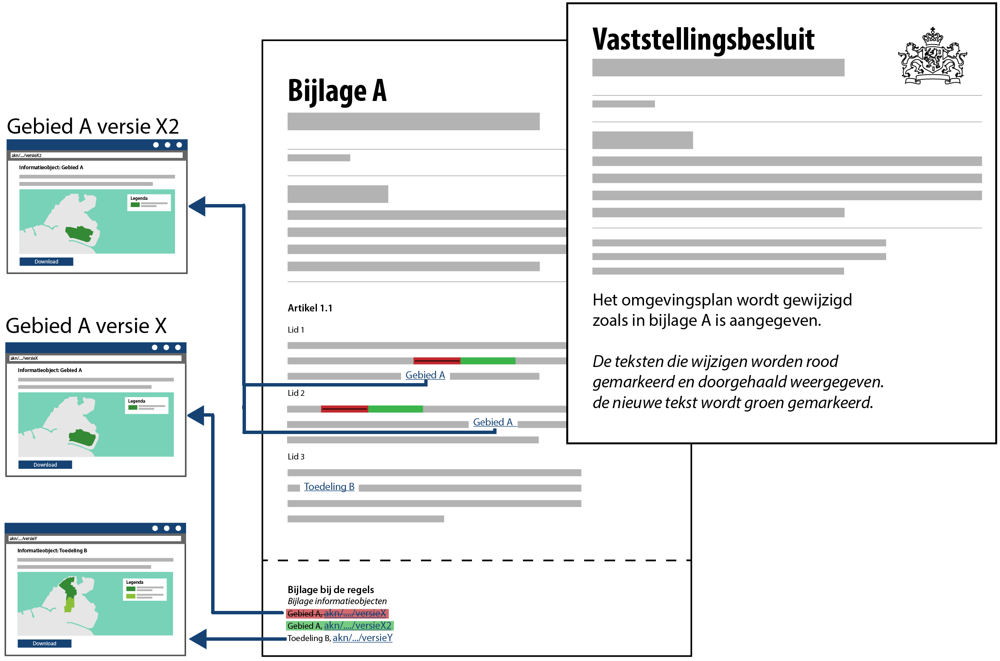

Presentatie van wijzigingsbesluiten
Een besluit kan de vaststelling van een initieel besluit (een eerste versie van een regeling) betreffen of een wijziging van het initiële besluit of regeling. Het laatste zal veelvuldig voorkomen bij met name omgevingsplannen, omgevingsverordeningen en waterschapsverordeningen. Bij een vaststelling van een besluit geldt dat het bevoegd gezag het hele besluit en de bijbehorende geografische informatieobjecten heeft bekeken en over ieder onderdeel daarvan heeft besloten. Bij een wijzigingsbesluit heeft het bevoegd gezag alleen een besluit genomen over het deel van de tekst en/of geografische informatieobjecten dat daadwerkelijk wijzigt. Er is bij een wijzigingsbesluit door het bevoegd gezag geen besluit genomen over de niet gewijzigde onderdelen van de regeling. Een wijzigingsbesluit dient daarom in mensleesbare vorm datgene te tonen wat door het besluit verandert in de geconsolideerde versie.
Methodiek voor presentatie van wijzigingen
Een besluit geeft aan welke nieuwe of gewijzigde regels worden vastgesteld. Een wijzigingsbesluit en de bekendmaking ervan, bevat daarom alleen tekstonderdelen (bijvoorbeeld artikelen) en informatieobjecten die wijzigen. De duiding van de wijzigingen binnen de regels, inclusief verwijzing naar informatieobjecten, worden expliciet meegeleverd in het besluit en het uitgangspunt is dat de wijzigingen in renvooiweergave worden gepresenteerd.
Wijzigingen in tekst presenteren
Voor het automatisch verwerken van wijzigingen is het werken met wijzigingsinstructies (bijvoorbeeld: In alinea 3 wordt ‘10’ vervangen door ‘12’) niet langer hanteerbaar, want dit vergt een menselijke interpretatie. Het wijzigingsbesluit via STOP kent dan ook geen wijzigingsinstructies, maar geeft de verschillen aan. Het besluit bevat de te wijzigen objecten/tekstonderdelen, en ook expliciet welke tekst is gewijzigd. De verschillen worden hiermee meegeleverd. Bijvoorbeeld: “De maximum bouwhoogte is <oud>10m</oud> <nieuw>12m</nieuw>.
De verschillen tussen de oude en de nieuwe versie worden aangegeven in een renvooiweergave: Een renvooiweergave zorgt ervoor dat de verschillen expliciet worden weergegeven doordat zowel de oude versie als de nieuwe versie én de verschillen visueel worden weergegeven. Onderstaande figuur bevat een voorbeeld van een tekst in renvooiweergave.
Voorbeeld van een tekst in renvooiweergave
Ook bij de renvooiweergave wordt de systematiek van functioneel presenteren gehanteerd: het presentatiemodel schrijft voor dat het wijzigingsbesluit de oude en de nieuwe versie inzichtelijk moet maken door ze gecombineerd te presenteren en dat ook de verschillen visueel moeten worden geduid. De symboliek (kleuren, font, grootte, arcering etc) worden echter in stylesheets buiten het besluit gedefinieerd. In bovenstaand voorbeeld wordt de tekst die niet wijzigt, in de renvooiweergave, zonder markering weergegeven. De tekst uit de oude versie wordt rood gemarkeerd en doorgehaald. De nieuwe tekst wordt eraan toegevoegd en groen gemarkeerd.
De renvooiweergave is meestal in een aparte bijlage opgenomen waarnaar verwezen wordt vanuit een wijzigartikel, bijvoorbeeld:
Het omgevingsplan wordt gewijzigd zoals in bijlage A is aangegeven.
In bijlage A wordt de tekst van de onderdelen die wijzigen in de renvooiweergave, zoals in het wijzigingsartikel is beschreven, gepresenteerd.
Conceptuele weergave van een wijzigingsbesluit
De applicatie die de renvooiweergave toont moet ook een uitleg geven wat de weergave betekent; in dit geval dat groen nieuwe tekst aanduidt en rood vervallen tekst.
Tekstmuteren beschrijft nu waar en hoe tekst mutaties in STOP toegepast kunnen worden, Bepalen van Wijzigingen en Renvooi gaat daarna dieper in op de precieze werking van Renvooi.